Curation Report
Time: 2024-07-10 02:15:34
Version: dev
mol_curation
Logs
- New column added: MOL_smiles
- New column added: MOL_molhash_id
- New column added: MOL_molhash_id_no_stereo
- New column added: MOL_num_stereoisomers
- New column added: MOL_num_undefined_stereoisomers
- New column added: MOL_num_defined_stereo_center
- New column added: MOL_num_undefined_stereo_center
- New column added: MOL_num_stereo_center
- New column added: MOL_undefined_E_D
- New column added: MOL_undefined_E/Z
- Default `ecfp` fingerprint is used to visualize the chemical space.
- Molecules with undefined stereocenter detected: 1001.
Images
Distribution in Chemical Space - ECFP
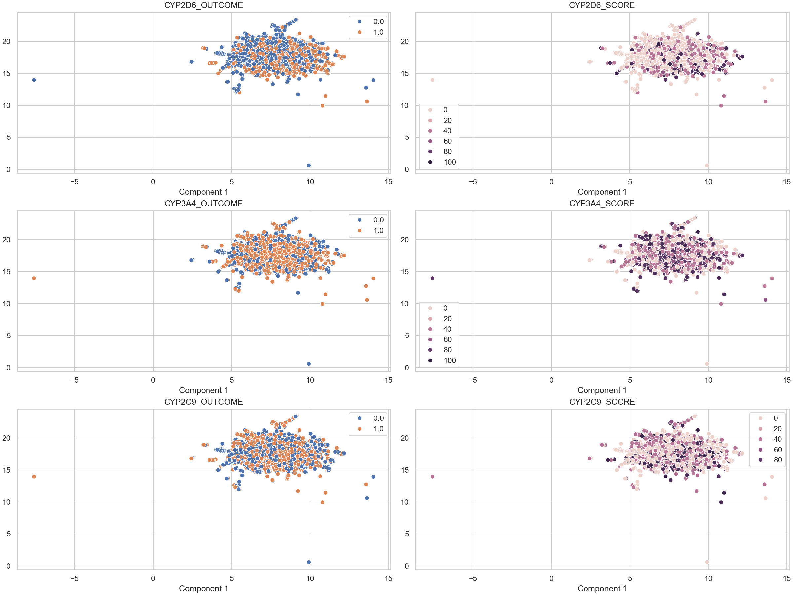Molecules with undefined stereocenters

There are 1001 molecules with undefined stereocenter(s). It's recommended to use and check the stereoisomers and activity cliffs in the dataset.
distribution
Images
Data distribution - CYP2D6_OUTCOME
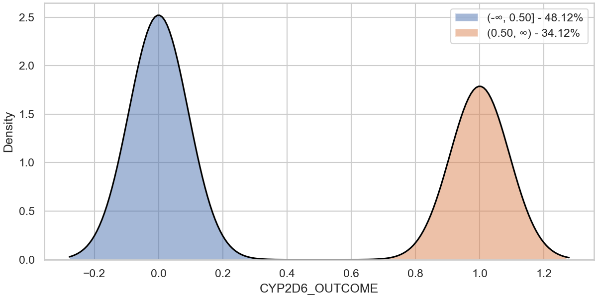Data distribution - CYP3A4_OUTCOME
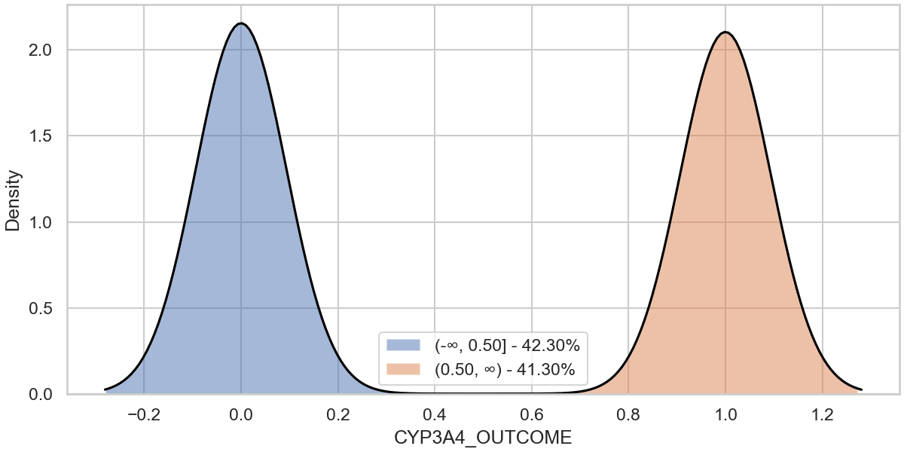Data distribution - CYP2C9_OUTCOME
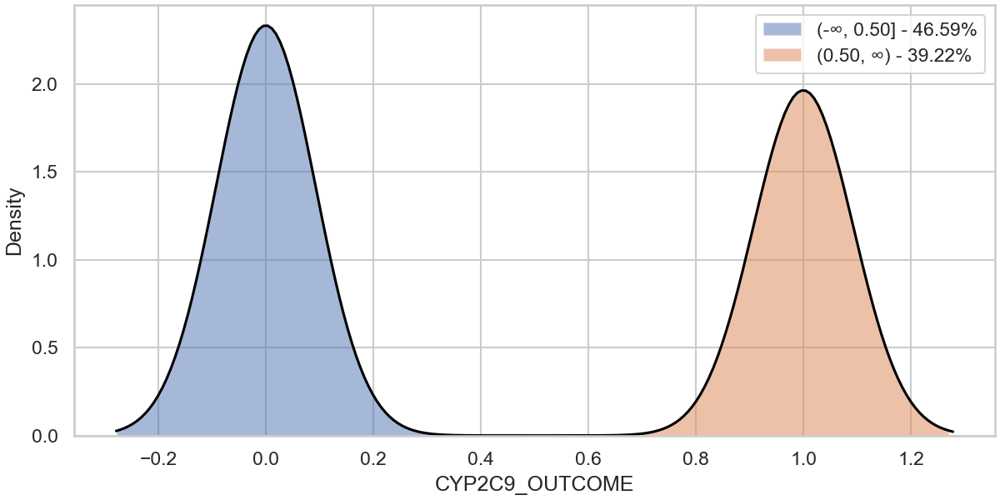distribution
Images
Data distribution - CYP2D6_SCORE
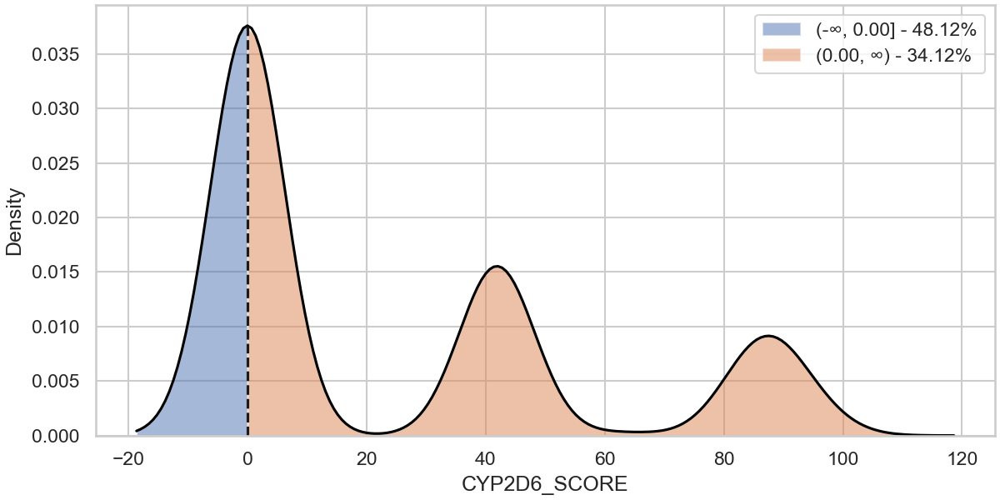Data distribution - CYP3A4_SCORE
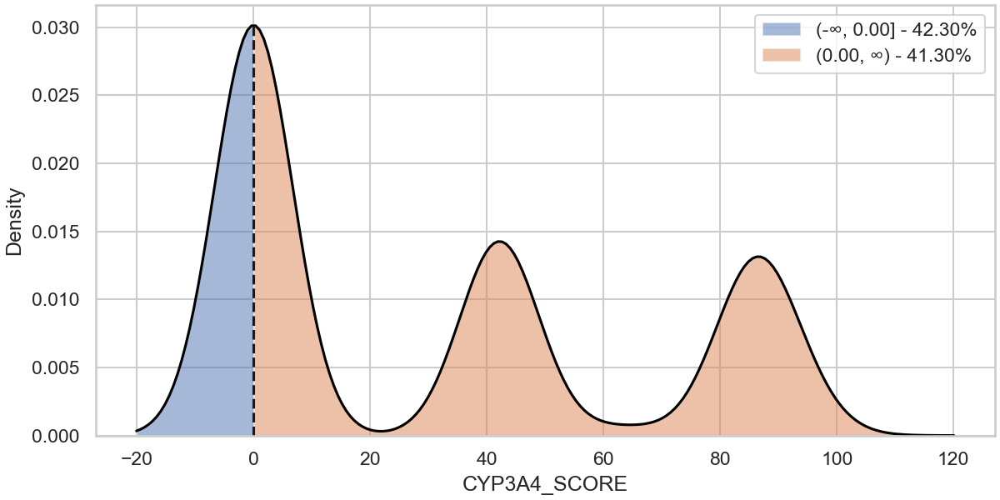Data distribution - CYP2C9_SCORE
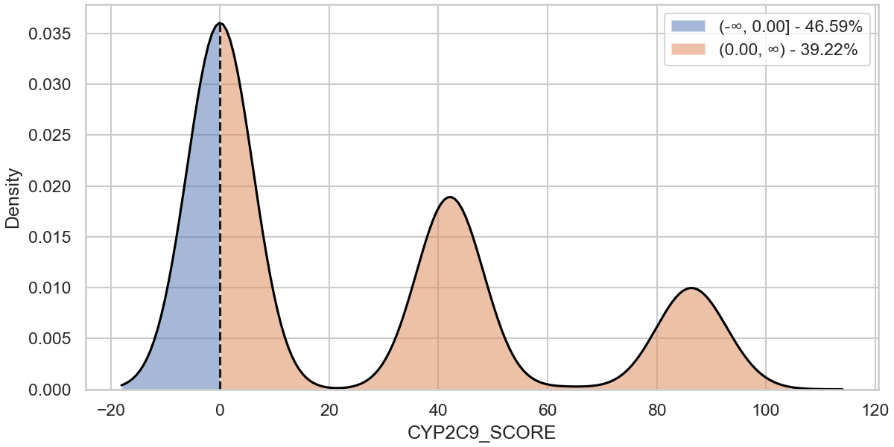outlier_detection
Logs
- New column added: OUTLIER_CYP2D6_SCORE
- Found 0 potential outliers with respect to the CYP2D6_SCORE column for review.
- New column added: OUTLIER_CYP3A4_SCORE
- Found 0 potential outliers with respect to the CYP3A4_SCORE column for review.
- New column added: OUTLIER_CYP2C9_SCORE
- Found 0 potential outliers with respect to the CYP2C9_SCORE column for review.
Images
Outlier detection - CYP2D6_SCORE
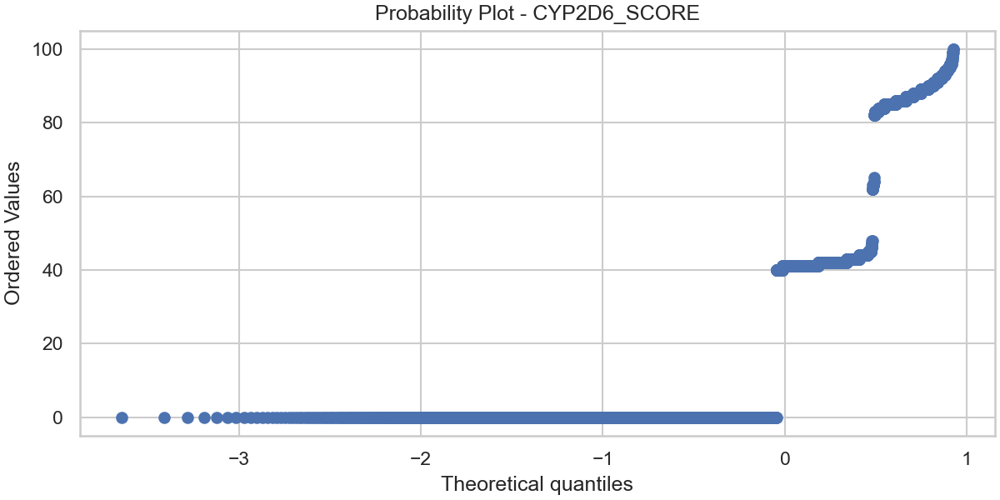Outlier detection - CYP3A4_SCORE
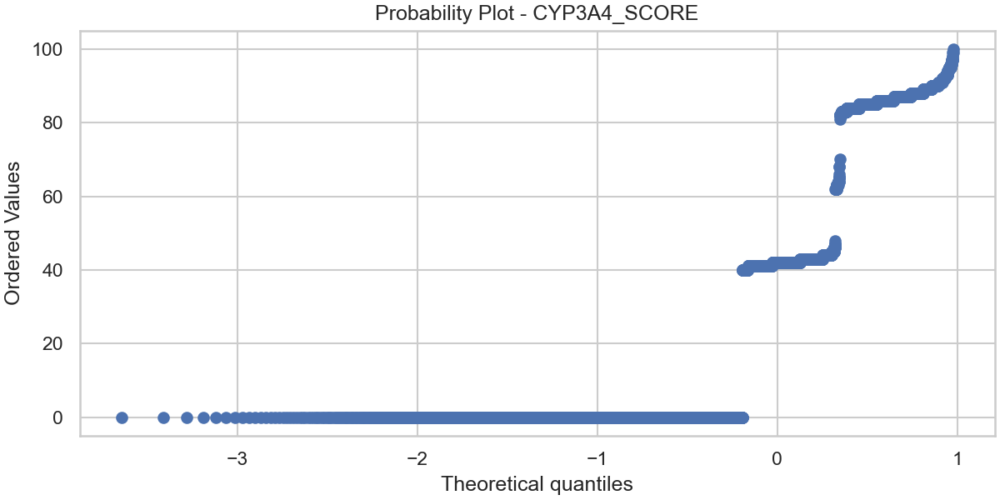Outlier detection - CYP2C9_SCORE
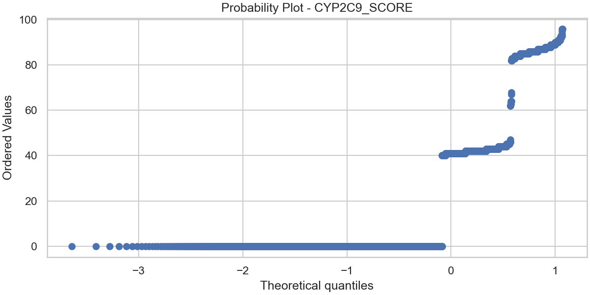ac_stereoisomer
Logs
- New column added: AC_CYP2D6_OUTCOME
- Found 10 activity cliffs among stereoisomers with respect to the CYP2D6_OUTCOME column.
- The molecule index are : 317 ,11 ,4114 ,2773 ,3933 ,2666 ,4199 ,3816 ,276 ,882
- New column added: AC_CYP3A4_OUTCOME
- Found 10 activity cliffs among stereoisomers with respect to the CYP3A4_OUTCOME column.
- The molecule index are : 2661 ,4293 ,1093 ,4290 ,4323 ,811 ,3980 ,1110 ,4344 ,84
- New column added: AC_CYP2C9_OUTCOME
- Found 24 activity cliffs among stereoisomers with respect to the CYP2C9_OUTCOME column.
- The molecule index are : 4058 ,883 ,3606 ,3252 ,4111 ,954 ,317 ,11 ,4202 ,690 ,592 ,4063 ,4100 ,507 ,4518 ,254 ,5118 ,3640 ,4345 ,2317 ,4588 ,4886 ,2236 ,3580
Images
Activity shifts among stereoisomers - CYP2D6_OUTCOME
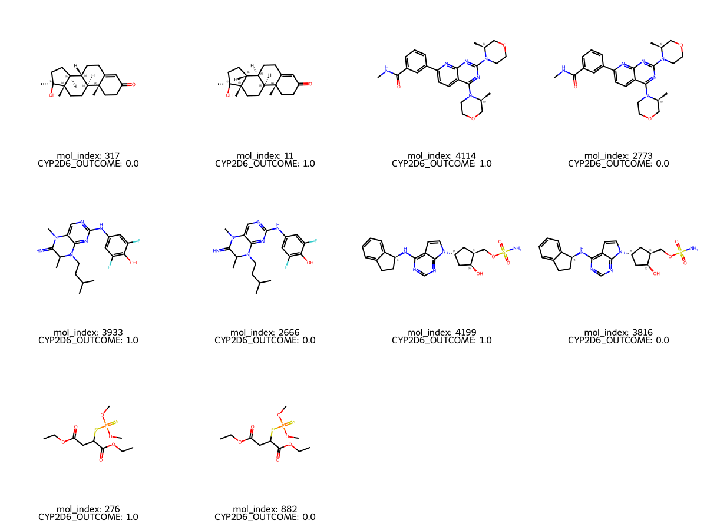Activity shifts among stereoisomers - CYP3A4_OUTCOME